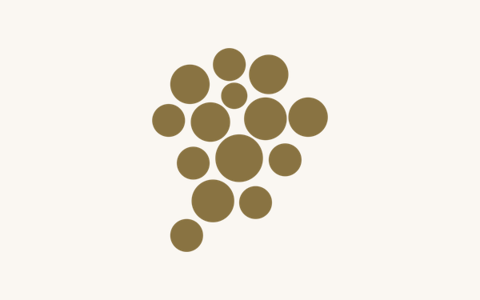
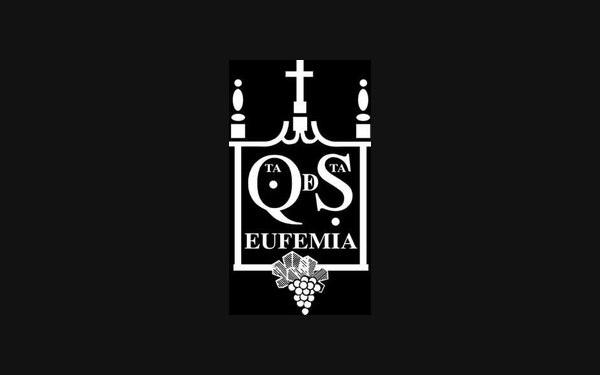
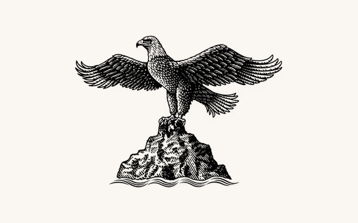
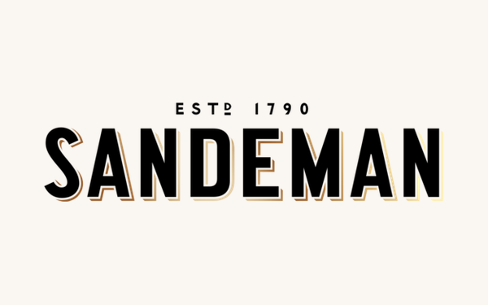
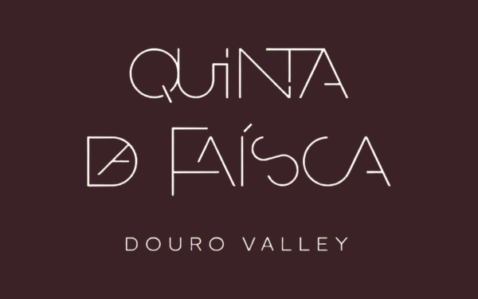

Mostra os tiles de email (fundo adaptativo). Original transparente em /logos/.
Base CDN: https://cdn.jsdelivr.net/gh/antoniomachadoo/quintas-douro-logos@main/
Quinta do Vallado Baixo Corgo · Peso da Régua quinta-do-vallado.pngQuinta da Pacheca Baixo Corgo · Lamego quinta-da-pacheca.pngQuinta da Gaivosa (Alves de Sousa) Baixo Corgo · Santa Marta de Penaguião quinta-da-gaivosa-alves-de-sousa.pngQuinta Seara d'Ordens Baixo Corgo · Peso da Régua quinta-seara-d-ordens.pngQuinta da Casa Amarela Baixo Corgo · Lamego quinta-da-casa-amarela.pngQuinta de Tourais Baixo Corgo · Lamego quinta-de-tourais.pngCasa dos Varais Baixo Corgo · Lamego casa-dos-varais.pngQuinta Vale Locaia Baixo Corgo · Lamego quinta-vale-locaia.png

Quinta de Casaldronho Baixo Corgo · Lamego quinta-de-casaldronho.png

Quinta Santa Eufémia Baixo Corgo · Lamego quinta-santa-eufemia.pngCaves da Raposeira Távora-Varosa · Lamego caves-da-raposeira.pngCaves da Murganheira Távora-Varosa · Tarouca caves-da-murganheira.pngQuinta do Tedo Baixo Corgo · Armamar quinta-do-tedo.pngQuinta do Crasto Cima Corgo · Sabrosa quinta-do-crasto.pngQuinta do Bomfim (Symington) Cima Corgo · Alijó / Pinhão quinta-do-bomfim-symington.pngQuinta da Roêda (Croft) Cima Corgo · Alijó / Pinhão quinta-da-roeda-croft.pngQuinta das Carvalhas (Real Comp. Velha) Cima Corgo · Peso da Régua quinta-das-carvalhas-real-comp-velha.png

Quinta de la Rosa Cima Corgo · Pinhão quinta-de-la-rosa.pngQuinta do Noval Cima Corgo · Alijó / Vale de Mendiz quinta-do-noval.png

Quinta do Seixo (Sandeman) Cima Corgo · Tabuaço quinta-do-seixo-sandeman.pngQuinta do Portal Cima Corgo · Sabrosa quinta-do-portal.pngQuinta Nova N. Sra. do Carmo Cima Corgo · Sabrosa / Covas do Douro quinta-nova-n-sra-do-carmo.pngQuinta de Ventozelo Cima Corgo · S. João da Pesqueira quinta-de-ventozelo.pngQuinta do Pôpa Cima Corgo · Tabuaço quinta-do-popa.pngQuinta do Panascal (Fonseca) Cima Corgo · Tabuaço quinta-do-panascal-fonseca.pngQuinta de São Luiz (Kopke) Cima Corgo · Tabuaço quinta-de-sao-luiz-kopke.pngQuinta da Manoella (Wine & Soul) Cima Corgo · Alijó / Vale de Mendiz quinta-da-manoella-wine-soul.pngQuinta de S. José Cima Corgo · S. João da Pesqueira quinta-de-s-jose.pngQuinta do Pessegueiro Cima Corgo · S. João da Pesqueira quinta-do-pessegueiro.pngQuinta da Côrte Cima Corgo · Tabuaço quinta-da-corte.pngQuinta do Pêgo Cima Corgo · Tabuaço quinta-do-pego.pngQuinta da Marka Cima Corgo · Sabrosa / Covas do Douro quinta-da-marka.pngLavradores de Feitoria Cima Corgo · Sabrosa lavradores-de-feitoria.pngQuinta da Avessada (Enoteca) Cima Corgo · Alijó / Favaios quinta-da-avessada-enoteca.pngAdega Cooperativa de Favaios Cima Corgo · Alijó / Favaios adega-cooperativa-de-favaios.png

Quinta da Faísca Cima Corgo · Favaios (Vila Real) quinta-da-faisca.pngQuanta Terra Cima Corgo · Alijó / Favaios quanta-terra.pngQuinta do Vale Meão Douro Superior · V. N. de Foz Côa quinta-do-vale-meao.pngQuinta de Ervamoira (Ramos Pinto) Douro Superior · V. N. de Foz Côa quinta-de-ervamoira-ramos-pinto.pngMaritávora Douro Superior · Freixo de Espada à Cinta maritavora.png